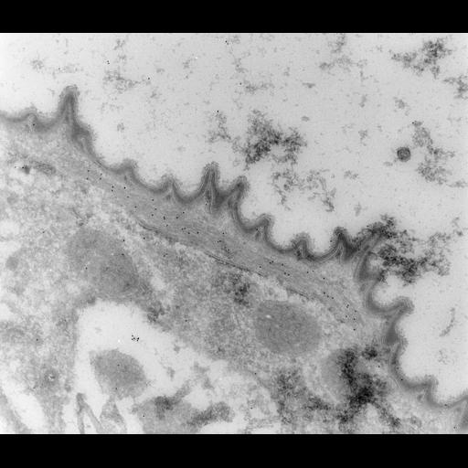

Peritrich body myoneme system
An interconnected contractile fiber system in the cell body of peritrich ciliates, comprising longitudinal and peristomial fibers. In Vorticella, body myonemes converge aborally into the distinct stalk spasmoneme. This record denotes the body network, not the stalk organelle, ciliary apparatus or an individual protein. [https://ilacadofsci.com/wp-content/uploads/2013/03/102-15MS2905-print.pdf]

NCBITaxon:60850) · Richard Allen (University of Hawaii); via Cell Image Library · PUBLIC_DOMAIN · source: CELL_IMAGE_LIBRARY CIL:39513 · DOI:10.7295/W9CIL39513Synonyms: body myonemes; myoneme system
Part of: GO:0005856 — cytoskeleton (no local record)
Components
| Component | Type | Part of / acts on | Grounding | Genes | Stoichiometry | Essential | Role |
|---|---|---|---|---|---|---|---|
| Centrin/spasmin-family proteins | Protein | part of | Reviewed label only (reviewed name; no accession asserted) | UNKNOWN | Immunolocalized constituents in V. convallaria; not an exhaustive or pan-peritrich inventory.
|
Canonical examples
NCBITaxon:60850Vorticella convallaria — Body-network immunolocalization; also the organism identified by CIL:39513. [https://ilacadofsci.com/wp-content/uploads/2013/03/102-15MS2905-print.pdf]NCBITaxon:168242Campanella umbellaria — Protargol reveals interconnected longitudinal and circular fibers. Abstract-only morphological example, not molecular composition or a contraction perturbation assay. [DOI:10.1002/jmor.10225]
Functions
- Cell-body contraction — Body fibers support zooid shortening; calcium-response evidence is from Vorticella.
https://ilacadofsci.com/wp-content/uploads/2013/03/102-15MS2905-print.pdfDistinguishes body myonemes from stalk spasmoneme.DOI:10.1242/jeb.189.1.163Abstract reports calcium-induced body shrinkage in living and Triton-extracted preparations.
Mechanism graphs
Vorticella cell-body calcium responses (FUNCTION)
Separate live-cell and detergent-extracted interventions.
| Subject | Predicate | Object | Evidence |
|---|---|---|---|
| Calcium-buffer injection into living Vorticella | elicits | Graded live cell-body shrinkage |
|
| Raised external calcium in Triton-extracted Vorticella | elicits | Extracted cell-body shrinkage |
|
Discussions
- CURATION_TODO (RESOLVED): Separate the body network from stalk and other ciliate contractile structures. Continuity and shared proteins do not establish identical subcellular boundaries.
- CURATION_TODO (OPEN): Resolve molecular inventory, exact family groundings and assembly requirements. Antibody localization is not a complete native assembly reconstruction.
- CURATION_TODO (RESOLVED): Keep body localization distinct from stalk immunogold measurements. Different compartments and antibodies cannot supply interchangeable measurements.
- CURATION_TODO (OPEN): Resolve the native calcium-handling and contraction mechanism. Response to an intervention does not identify the molecular machinery that mediates it.
- CURATION_TODO (OPEN): Identify molecular constituents before separately curating the ER-myoneme linkage complex. A recognizable substructure need not have an identified protein inventory.
- CURATION_TODO (RESOLVED): Keep the source preview and antibody interpretation within their documented scope. A qualitative preview is not a calibrated raw image or an isoform-resolved assay.
Evidence
https://ilacadofsci.com/wp-content/uploads/2013/03/102-15MS2905-print.pdfKonior et al. (2009), 102:161-174. Complete main PDF and legends read; Figure 3 visually inspected.DOI:10.1002/jmor.10225Shi et al. (2004). Primary PubMed abstract read; checked publisher full-text routes were inaccessible.DOI:10.1242/jeb.189.1.163Katoh and Naitoh (1994). PubMed and publisher abstracts read; full publisher text requires access.DOI:10.1083/jcb.56.2.559Allen (1973). Complete 21-page PMC2108889.1 PDF read; Figures 1, 7-10 and 19 inspected.DOI:10.7295/W9CIL39513Per-item JSON-LD and source preview inspected; public-domain dedication verified.GO:0005622Non-obsolete intracellular anatomical structure; broad is-a parent only.GO:0005856— cytoskeleton Non-obsolete cytoskeleton; used as a parthood target, not exact identity.
Curation history
2026-10-03T23:23:39Zcodex · CREATED_RECORD — Scaffolded by scripts/new_record.py2026-10-03T23:25:09Zcodex · EXPANDED_RECORD — Added scoped peritrich identity, verified examples, centrin/spasmin localization, separate live/extracted calcium responses, evidence limitations and verified CIL preview.2026-10-03T23:47:03Zcodex · CLARIFIED_ASSAY_SCOPE — Qualified the Konior study's light-microscopy statement and distinguished the separate CIL immunogold TEM dataset after self-review issue #2004.
Source: data/structures/cytoskeleton/peritrich_body_myoneme_system.yaml